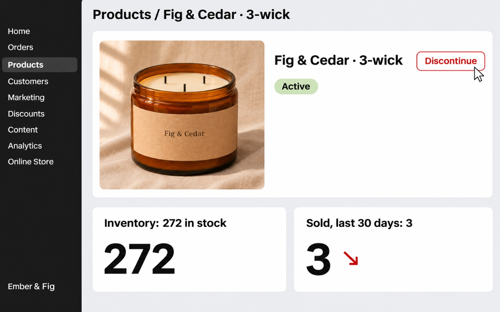

Are these safe for cats?
- A cat lady sits on her sofa at night; candles burn all over her apartment, her cat beside her.
- She scrolls the Fig & Cedar product page up and down, searching. She does not buy.
- Inner voice, lips closed, the camera circling her: “Are these safe for cats?”
- She finds nothing, gets annoyed (shown only), closes the site: “I guess we'll never know.”
- The High flip turns from her down to the owner, who runs the shop. In her head, nervous: “Two hundred seventy-two left.” Her stockroom is full of unsold jars: “Nobody wants Fig and Cedar.” She clicks Discontinue: “Time to discontinue the line.” She blows out the candle.
- Scout's voice: “Don't guess why your shoppers don't buy.” End screen: “Scout interviews your shoppers for you. Get free early access.”
The idea, as Seedance is told it (Emile, H240): she is about to buy the candle but never finds the one thing she needs to know, whether it is safe for her cat, so she leaves without buying. The owner, who runs the online shop, sees only the missing sales and her unsold stock (272 jars), wrongly concludes nobody wants Fig & Cedar, and, surprisingly, discontinues the line on that wrong premise.
Candles (Emile, Nov 15 2:11 PM): her home has only white pillar candles and tea lights; the amber three-wick Fig & Cedar jar appears only on the product page and in the owner's studio, so she clearly doesn't own it.
The technique: the one hard camera move, the High flip, is taken from a real clip (@Video2, its move only). Every other move (slow arc, circling her face, push-ins) is written in words. 30 s, 9:16, draft 480p, set in the job, not in the prompt. Nothing has been generated or spent.
Shot list
| Time | Who | What | Line | Assets |
|---|---|---|---|---|
| 0-3s | Shopper, cat | Opening shot. Wide, slow arc toward her on the sofa, candles everywhere, laptop open, the cat curled beside her. | — | @Image1 @Image2 @Image3 |
| 3-5s | Shopper (hand) | Hard cut. Over her shoulder: her fingers scroll the product page down, then back up. | — | @Image1 @Image3 @Image4 |
| 5-8s | Shopper, cat | Hard cut. Close-up; the camera slowly circles her face; the cat soft behind. | Are these safe for cats? (inner voice, lips closed) | @Image1 @Image2 @Image3 @Audio1 |
| 8-10s | Shopper | Hard cut. Medium close-up, slow push in: she scrolls faster, finds nothing; jaw tightens, sharp exhale, rubs her brow. | — | @Image1 @Image3 @Image4 |
| 10-13s | Shopper, cat | Hard cut. Medium: she closes the site, leans back, looks at the cat. | I guess we'll never know. (inner voice, lips closed) | @Image1 @Image2 @Image3 @Audio1 |
| 13-15s | Shopper → owner | High flip (@Video2): the camera rises over her until it looks straight down, the sofa back sweeps the frame as the view flips, out level on the owner at her desk. | — | @Video2 @Image1 @Image5 @Image6 |
| 15-17s | Owner | Lands from the flip. Over her shoulder onto her laptop, slow push in: her store admin ON the laptop screen, Fig & Cedar, 272 in stock, 3 sold. | Two hundred seventy-two left. (inner voice, nervous, lips closed) | @Image5 @Image6 @Image7 @Audio2 |
| 17-20s | Owner | Hard cut. Slow orbit around her as she looks up at her stockroom shelves stacked with unsold Fig & Cedar jars and boxes beside the packing table; the lit jar on her desk. | Nobody wants Fig and Cedar. (inner voice, worried, lips closed) | @Image5 @Image6 @Image8 @Audio2 |
| 20-22s | Owner (cursor) | Hard cut. Macro on her laptop: her cursor clicks Discontinue on Fig & Cedar. | Time to discontinue the line. (inner voice, lips closed) | @Image5 @Image7 @Audio2 |
| 22-23s | Owner, jar | Hard cut. Close-up: she leans in and blows out the jar; three flames go out. | — | @Image5 @Image8 @Image6 |
| 23-25s | Smoke | Hard cut. Macro on the smoking wicks, slow push in. | Don't guess why your shoppers don't buy. (Scout, off screen) | @Image8 @Audio3 |
| 25-30s | End screen | Hard cut. Scout's end screen, its picture and voice. | Scout interviews your shoppers for you. Get free early access. (Scout, off screen) | @Video1 |
What Seedance gets
Only these 13 files, in this order, plus the prompt below. Nothing else on this page is sent.

The shopper: face, bob, cardigan only

The grey tabby cat only

Her apartment, room only: white pillar candles and tea lights, no amber jars; not the closed laptop

Her laptop screen: the Fig & Cedar page (pointer removed)

The owner: face, braid, sweater only
Her studio and stockroom: shelves of unsold Fig & Cedar jars and boxes, packing table, label printer (take 3)

Her store admin, only on her laptop: Fig & Cedar, 272 in stock, 3 sold, Discontinue (take 3)

The one Fig & Cedar jar
Scout end screen, picture + voice, 25-30s
High flip: its camera move only, 13-15s
Shopper voice timbre (not its words)
Owner voice timbre (not its words)
Scout voice timbre, 23-25s (not its words)
The prompt (send this one) · 1,000 words · sha256 c4d3669d…aeec2
【Generation Goal】 Generate a live-action story ad. A cat lady is about to buy the Fig & Cedar candle, but its product page never says whether it is safe for cats, all she needs to know, so she leaves without buying. The owner, who runs the online shop, sees only the missing sales and her unsold stock, wrongly concludes nobody wants Fig & Cedar, and, surprisingly, discontinues the line on that wrong premise. Please note that this is not video editing. 【Reference Asset Roles】 The shopper maps to @Image1; use only her face, dark bob with bangs and cream cardigan. The grey tabby cat maps to @Image2; use only the cat. The shopper's apartment references @Image3; use only the room, sofa and lit white pillar candles and tea lights, not the closed laptop on the stool. Her product page references @Image4; use it only on her laptop screen. The owner maps to @Image5; use only her face, auburn side braid and rust sweater. The owner's studio and stockroom references @Image6; use only its brick wall, shelves of boxes and unlit Fig & Cedar jars, packing table with shipping boxes and label printer, and desk. Her store admin references @Image7, the Fig & Cedar product page; use it only on her laptop screen, never as an overlay. The Fig & Cedar jar maps to @Image8; use only the amber three-wick jar with its kraft label. @Video2 is used only for the High flip camera move in 13-15s, not its people, furniture, room or colours. @Video1 is Scout's end screen in 25-30s; reproduce its picture and voice exactly. @Audio1 is used only for the shopper's inner-voice timbre; not its words. @Audio2 is used only for the owner's inner-voice timbre; not its words. @Audio3 is used only for Scout's voice timbre in 23-25s; not its words. 【Subjects and Relationships】 The shopper (@Image1) and her cat (@Image2) are only in her apartment (@Image3); the owner (@Image5) is only in her studio (@Image6). The one lit Fig & Cedar jar (@Image8) is on the owner's desk; unsold ones fill her shelves; the shopper's own candles are only white pillars and tea lights, never amber jars. She never clicks Add to cart. 【Event Script】 0-3s: [Opening shot. Wide, slow arc toward the shopper] The shopper (@Image1) sits on the sofa in her apartment (@Image3), white candles lit everywhere, laptop open on her lap, the cat (@Image2) curled beside her. At the end, screen glow lights her face. 3-5s: [Hard cut. Over the shopper's shoulder onto her laptop, static] The shopper's (@Image1) fingers scroll the product page (@Image4) down, then back up, searching. At the end, the page is back at the top. 5-8s: [Hard cut. Close-up, the camera slowly circles around the shopper's (@Image1) face] The cat (@Image2) soft behind her. The shopper (@Image1), in English, in the voice of @Audio1 (inner voice, wondering, lips closed): {Are these safe for cats?} At the end, the camera is at her other side. 8-10s: [Hard cut. Medium close-up, slow push in on the shopper] The shopper (@Image1) scrolls the product page (@Image4) faster, up and down, finding nothing about pets; her jaw tightens, she exhales sharply and rubs her brow. At the end, her hand rests on her brow. 10-13s: [Hard cut. Medium shot, static] The shopper (@Image1) closes the site to an empty browser, leans back, looks at the cat (@Image2). The shopper (@Image1), in English, in the voice of @Audio1 (inner voice, resigned, lips closed): {I guess we'll never know.} At the end, she looks at the cat. 13-15s: [High flip (@Video2)] The camera rises over the shopper (@Image1) until it looks straight down, the sofa back sweeps across the frame as the view flips 180 degrees, and it comes out level on the owner (@Image5) at her desk in the studio (@Image6) <soft whoosh>. At the end, the camera is level on the owner. 15-17s: [Lands from the High flip. Over the owner's shoulder onto her laptop, slow push in] Her laptop shows the store admin (@Image7): Fig & Cedar, 272 in stock, 3 sold. The owner (@Image5), in English, in the voice of @Audio2 (inner voice, nervous, lips closed): {Two hundred seventy-two left.} At the end, the 272 fills the screen. 17-20s: [Hard cut. Medium shot, slow orbit around the owner] The owner (@Image5), the lit jar (@Image8) beside her laptop, looks up at her stockroom shelves (@Image6) stacked with unsold Fig & Cedar jars and boxes beside the packing table; she stays still. The owner (@Image5), in English, in the voice of @Audio2 (inner voice, worried, lips closed): {Nobody wants Fig and Cedar.} At the end, the stacked jars are behind her. 20-22s: [Hard cut. Macro on her laptop screen, static] On her store admin (@Image7), the owner's (@Image5) cursor clicks Discontinue on Fig & Cedar <click>. The owner (@Image5), in English, in the voice of @Audio2 (inner voice, lips closed): {Time to discontinue the line.} At the end, her cursor rests on Discontinue. 22-23s: [Hard cut. Close-up, static] The owner (@Image5) leans in and blows out the jar (@Image8) <a soft breath>; its three flames go out. At the end, smoke rises from the three wicks. 23-25s: [Hard cut. Macro on the jar's (@Image8) smoking wicks, slow push in] Scout, in English, in the voice of @Audio3 (off screen, calm): {Don't guess why your shoppers don't buy.} At the end, smoke curls up. 25-30s: [Hard cut. Scout's end screen (@Video1)] Scout, in English, in @Video1's own voice (off screen): {Scout interviews your shoppers for you. Get free early access.} At the end, its final frame holds. 【Sound and Text】 Night room tone at the shopper's <faint candle crackle>; quiet studio tone at the owner's. (Soft, warm music.) No ka-ching, cart sound or chime. No subtitles. No on-screen text except the laptop screens (@Image4, @Image7), the jar labels and the end screen (@Video1). 【Maintain Consistency】 Hard cuts only, except the High flip. Keep both women, the cat, the jar and both rooms identical.
The High flip, frame by frame
@Video2 at 2 frames a second: the camera rises above the seated person, the chair back sweeps the frame as it flips, and it comes out level on the other person. Seedance takes only this move, not the people, chair, table or colours.

Our prompt before the sd25-pe compile
A warm live-action story ad in two homes for a small candle brand, 10 shots. Camera moves are the technique: the High flip is taken from a reference clip (@Video2, its move only); every other move is written in words. Cast and places The shopper (@Image1): dark-brown bob with bangs, cream cardigan. Her cat (@Image2), a grey tabby. Her night apartment (@Image3): candles burning on every surface; her laptop is open on her lap (not the closed laptop in the picture). Her laptop shows the Fig & Cedar product page (@Image4); she never clicks Add to cart (no cursor). The owner (@Image5): auburn side braid, rust sweater. Her candle studio (@Image6). Her laptop shows units sold (@Image7), Fig & Cedar at 3 (-84%). The one Fig & Cedar jar (@Image8), lit, on her desk. Voices: shopper @Audio1, owner @Audio2, Scout @Audio3 (timbre only, not their words). End screen @Video1. Shots 1. 0-3s, opening, wide, slow arc toward her: the shopper on the sofa among the candles, laptop open, the cat curled beside her. 2. 3-5s, hard cut, over her shoulder: her fingers scroll the product page down, then back up, searching. 3. 5-8s, hard cut, close-up, the camera slowly circles her face, the cat soft behind. Inner voice, lips closed: {Are these safe for cats?} 4. 8-10s, hard cut, medium close-up, slow push in: she scrolls faster up and down, finds nothing about pets; jaw tightens, sharp exhale, rubs her brow. Silent. 5. 10-13s, hard cut, medium: she closes the site to an empty browser, leans back, looks at the cat. Inner voice, lips closed: {I guess we'll never know.} 6. 13-15s, High flip (@Video2): the camera rises over her until it looks straight down, the back of the sofa sweeps across the frame as the view flips, and it comes out level on the owner at her desk. 7. 15-17s, lands from the flip, over her shoulder onto the laptop, slow push in: her store admin, Fig & Cedar, 272 in stock, 3 sold. Inner voice, lips closed, nervous: {Two hundred seventy-two left.} 8. 17-20s, hard cut, slow orbit: she looks up at her stockroom shelves full of unsold Fig & Cedar jars and boxes by the packing table. Inner voice, worried: {Nobody wants Fig and Cedar.} 9. 20-22s, hard cut, macro on the laptop: her cursor clicks Discontinue. Inner voice: {Time to discontinue the line.} 10. 22-23s, hard cut, close-up: she blows out the Fig & Cedar jar; three flames go out. 11. 23-25s, hard cut, macro on the smoking wicks. Scout, off screen: {Don't guess why your shoppers don't buy.} 12. 25-30s, hard cut, the end screen (@Video1), its picture and voice: {Scout interviews your shoppers for you. Get free early access.} Sound: quiet night room tone and faint candle crackle at hers, quiet studio tone at the owner's, a soft warm music bed. No ka-ching, no cart sound, no chime. No subtitles. Hard cuts only, except the High flip.
History and checks
sd25-pe check (SD25-CHECK.md, H240 render gate): zero FAILs
# SD25-CHECK · H240 Render (from H227 D, camera moves) · cat-candle story · Nov 15 2026
Prompt checked: `prompt-sd25pe-final.txt` (1,000 words, 7 spoken lines, sha256 c4d3669d50b12fe9be4c70e324cc26b9d3b28714f9d4dd580a81f3b7a28aeec2). Asset list: `H240-assets.txt`.
**Take 3 (Emile, Nov 15 4:13 PM on H240):** "The only part I don't like is the owner… too robotic… it should be in her mind… a clear picture of Fig and Cedar with 272 in stock, and then we see them somewhere in their stock… as if they're like a surplus of stock… she's nervous about it… there's no reference that she's a store owner… we need to feel like this is a shop, she's selling, and she's a Shopify owner." Applied per the next-round brief: 0-15s, 22-23s (blow-out), 23-25s (lesson line) and 25-30s (end screen) are byte-identical to take 2 (diffed, 9 of 9 lines). Only 15-22s changed, and the owner now speaks only as an inner voice, lips closed, like the shopper: 15-17s over her shoulder, her store admin (@Image7) on the laptop shows Fig & Cedar 272 in stock, 3 sold, {Two hundred seventy-two left.} (nervous); 17-20s slow orbit as she looks up at her stockroom shelves (@Image6) stacked with unsold Fig & Cedar jars and boxes beside the packing table, {Nobody wants Fig and Cedar.} (worried); 20-22s macro as her cursor clicks Discontinue, {Time to discontinue the line.}. New free stills: @Image7 = the Fig & Cedar product page in her store admin (media 71429343; inspected: dark sidebar, Products selected, breadcrumb, jar photo, Active, 'Inventory: 272 in stock', 'Sold, last 30 days: 3' with a red down arrow, red outlined Discontinue button with an arrow cursor on it, store name Ember & Fig, no platform logo). @Image6 = the same studio edited into a stockroom and packing corner (media f8a51279; inspected: brick wall, metal shelving with rows of unlit amber jars labelled 'Fig & Cedar' and stacked kraft boxes, packing table with flattened shipping boxes, tape gun, kraft paper roll and a label printer printing a label, desk with laptop, plant, no people, no lit candles). The old units-sold list and the X-delete admin (take 2's @Image7 and @Image9) are off the upload list. Goal now: "The owner, who runs the online shop, sees only the missing sales and her unsold stock, wrongly concludes nobody wants Fig & Cedar, and, surprisingly, discontinues the line on that wrong premise." Relationships: "The one lit Fig & Cedar jar (@Image8) is on the owner's desk; unsold ones fill her shelves" (the lit desk jar is the one she blows out; the shelf jars are unlit stock, which Emile asked for). Previous cleared prompt: `prompt-sd25pe-final.take2.txt` (b4f4b5ed).
**Round 2 (history, superseded by take 3; Emile, Nov 15 2:35 PM on H240, after take 1):** "I like the portion of the client. The portion of the owner is not good… there's an overlay of the thing. This is horrendous… that should be on the laptop… The shot is too long… [his first owner line, quoted exactly in the 15-17s prompt line]… [his second take-2 owner line]… You see her clicking X, deleting it from the website, and blowing away the candles… a camera spinning around her… with the laptop as a center point." Applied: 0-15s lines byte-identical to take 1 (diffed). 15-25s rebuilt as five shots: 15-17s over her shoulder onto the laptop, the list (@Image7) only on the screen ("never as an overlay" in its role line); 17-20s slow orbit with the laptop as the centre, she sits still; 20-22s macro on her store admin (@Image9, new free GPT Image still, media 66bac8e5) as her cursor clicks the red X on Fig & Cedar; 22-23s she blows out the jar; 23-25s smoking wicks + Scout's line. Owner lines are his exact words, no "I guess". 25-30s keeps @Video1 (the real H158 end screen is laid in after the take, free). Goal now ends "discontinues the line on that wrong premise, deleting it from her website". Kept ≤1,000 words by tightening role lines to "use only …" form and cutting duplicates ("Scout is seen only in the end screen", the relationships duplicate of the goal, the studio dimming, "lifting into the end screen"). Previous cleared prompt: `prompt-sd25pe-final.take1.txt` (df8a11dd).
**H240 changes (Emile, Nov 15, on the cards):** (a) 2:10 PM on H240: "clearly explain to Seedance the idea: the customer is looking at a thing, she's not finding the thing that makes her buy, and the owner has the wrong reason and is discontinuing the line on the wrong premise." (b) 2:11 PM on H225, for every cat-candle ad: the Fig & Cedar candle must look clearly different (shape and colour) from the candles she already owns. Done the sd25-pe way, story facts only: 【Generation Goal】 now reads "A cat lady is about to buy the Fig & Cedar candle, but its product page never says whether it is safe for cats, all she needs to know, so she leaves without buying. The owner sees only the missing sales, wrongly concludes nobody wants Fig & Cedar, and, surprisingly, discontinues the line on that wrong premise, blowing out the candle." 【Subjects and Relationships】 adds "the shopper's own candles are only white pillars and tea lights, never amber jars; the amber Fig & Cedar jar appears only on her screen (@Image4) and in the studio" and "The shopper's unanswered question is the real reason for the low sales; the owner never learns it." The @Image3 role says "its lit white pillar candles and tea lights"; 0-3s says "white candles lit everywhere". @Image3 is now apartment-candles-v2 (free GPT Image edit; media f11fa295, inspected: same room, every candle a white/cream pillar or tea light in clear/white holders, no amber glass, no labels, no person, no cat, closed laptop on the stool, which the role line fences). No new dialogue, event, shot, asset or sound. To stay ≤1,000 words, exact duplicates were cut: the move description inside the @Video2 role line (13-15s still describes it), "the only non-cut transition" ("Hard cuts only, except the High flip" stays), "She sighs.", "The shopper's lips stay closed." and "Three voices only: …" (every spoken line still names its speaker, @Audio, on/off screen and lips closed), "the women are never in the same room" (each is "only in" her own room), "silent", "and smoke rises" (end state keeps it), the goal's "Scout's voice says not to guess" (23-25s keeps the line). Diff vs the approved H227 prompt (`prompt-sd25pe-final.pre-h240.txt`): {…} lines identical 5/5, @asset set identical, sound effects identical, gate line once.
Assets inspected (not guessed from names): 8 stills viewed (take 3: @Image6 and @Image7 replaced, see the note above; take-2 @Image9, removed, was: a store-admin Products page, dark sidebar, five rows with grey X buttons, the Fig & Cedar · 3-wick row pale red with a red X and a white arrow cursor on it, store name Ember & Fig, no platform logo); @Video2 contact sheet (throne → overhead → chair back sweeps → poker table; no audio track); @Video1 contact sheet (orb → Scout wordmark → "For Shopify owners"); all audio transcribed with Deepgram:
- @Audio1: "Oh my gosh. Okay. So we finally booked the beach house for July…" (timbre only)
- @Audio2: "Bright with notes of stone fruit. Do my buyers even talk like that?…" (timbre only)
- @Audio3: "Scout interviews your shoppers for you. Get free early access." (timbre only in 23-25s)
- @Video1 own audio: "Scout interviews your shoppers for you. Get free early access." (= the 25-30s line, so reproduced)
Task: video generation with references. Gate: @Video1 is 4.5 s and @Video2 is 5 s against a 30 s output, so "Please note that this is not video editing." goes right after the goal sentence (once).
## Final Checklist
| # | Item | Result | Proof line |
|---|------|--------|-----------|
| 1 | One primary task | PASS | Generation only: "Generate a warm live-action story ad." |
| 2 | Subjects, counts, scene, props, outcome unchanged | PASS | One shopper, one cat, one owner, one jar; "so she leaves without buying"; "discontinues the line on that wrong premise"; 20-22s she clicks Discontinue; 22-23s she blows out the jar; end screen. Matches STORY.md lines 1-6 and Emile's H240 note. Cause shown before reaction: the page with nothing about pets (3-10s) comes before she leaves, the 272-in-stock screen (15-17s) comes before her first thought and the stocked shelves are in shot (17-20s) as she thinks the second |
| 3 | Every required entity covered; no merge | PASS | Shopper @Image1, cat @Image2, apartment @Image3, product page @Image4, owner @Image5, studio and stockroom @Image6, store admin product page @Image7, jar @Image8, Scout @Video1 |
| 4 | Every used asset has one unique role | PASS | 13 role lines, one per asset; @Audio3 = timbre in 23-25s only; @Video1 = end screen in 25-30s only |
| 5 | User's existing references kept | PASS | Brief fixes "High flip (@Video2)"; kept as @Video2 |
| 6 | No claims about unread assets | PASS | All 13 inspected (above) |
| 7 | No forced assets; unused listed | PASS | Every upload has a role, so no 【Unused Assets】 block. Dropped clips (eyes-in, Dip pace, earth zoom) are off the upload list, not merely unused |
| 8 | Inaccessible assets not treated as understood | PASS | None inaccessible |
| 9 | Characters/props mapped one by one, no range | PASS | "The shopper maps to @Image1…", "The owner maps to @Image5…", "The Fig & Cedar jar maps to @Image8…" |
| 10 | No single-person image defines two people | PASS | Shopper face and cat are separate crops; room still @Image3 (v2) has no person or cat |
| 11 | Each stage one change + end state | PASS | Each of 10 ranges ends with "At the end, …" |
| 12 | User time ranges kept | PASS | 0-3 / 3-5 / 5-8 / 8-10 / 10-13 / 13-15 kept from take 1; 15-17 / 17-20 / 20-22 / 22-23 / 23-25 / 25-30 per the round-2 brief; continuous, integer |
| 13 | Editing rules | N/A | Not an editing task |
| 14 | Locked ratio/duration rules | PASS | No ratio, duration or resolution in the prompt (grep for 9:16/vertical/seconds = 0) |
| 15 | Extension rules | N/A | Not an extension |
| 16 | First/last frame statements | N/A | No keyframes |
| 17 | Multiple keyframes | N/A | None |
| 18 | Storyboard grid | N/A | None |
| 19 | Blockout | N/A | @Video2 is a camera-move reference, not a blockout |
| 20 | Emotion and camera terms observable | PASS | Annoyance shown as "jaw tightens, she exhales sharply and rubs her brow"; moves named as visible paths: "slow arc toward the shopper", "the camera slowly circles around the shopper's (@Image1) face", "slow push in on the shopper", "camera rises … looks straight down … sofa back sweeps across the frame … comes out level on the owner" |; take 3 adds "Over the owner's shoulder onto her laptop, slow push in", "slow orbit around the owner" while she "looks up at her stockroom shelves … she stays still", and "Macro on her laptop screen, static" with "her cursor clicks Discontinue". Nervousness is a delivery note on an inner voice (lips closed), not an invented action
| 21 | Speaker, state, words, audio, language, on/off screen per line | PASS | 5s-8s and 10-13s "The shopper (@Image1), in English, in the voice of @Audio1 (inner voice, …, lips closed)"; 15-17s, 17-20s and 20-22s "The owner (@Image5), in English, in the voice of @Audio2 (inner voice, nervous / worried, lips closed)"; the @Audio2 role says "inner-voice timbre"; 23-25s "Scout, in English, in the voice of @Audio3 (off screen …)"; 25-30s "in @Video1's own voice (off screen)". No accent added |
| 22 | Numbers stay identifiers | PASS | "3 (-84%)" is screen text; "180 degrees" is a flip, not a shot number |
| 23 | No parameters, analysis, keys, reasons | PASS | Prompt holds only the template sections |
| 24 | Gate line exactly once, only when triggered | PASS | Triggered by 4.5 s / 5 s refs vs 30 s; appears once, right after the goal sentence |
| 25 | Ref-video spec decision from real specs | PASS | ffprobe: @Video1 1080x1920 4.5 s with audio; @Video2 600x1066 5.0 s, no audio |
| 26 | No unrequested negative constraints | PASS | Each "no" is Emile's or a fence for a real leak: "No ka-ching, cart sound or chime." (STORY hard rules), "never amber jars" (Emile, Nov 15 2:11 PM: her candles must look unlike the Fig & Cedar jar), "do not use the closed laptop on the stool" (STORY), "No subtitles" (spoken lines must not be captioned) |
| 27 | Placeholders replaced; body only | PASS | No <placeholder> left; <soft whoosh>, <a soft breath>, <faint candle crackle> are sound effects |
## Non-Negotiable Principles 1-11
| # | Principle | Result | Proof line |
|---|-----------|--------|-----------|
| 1 | Intent first | PASS | Emile's 5 lines identical to STORY.md (diff of {…}: no difference); she never buys; Emile's H240 plot (she can't find the one thing that makes her buy; the owner discontinues on a wrong premise) is stated in the goal as story fact, not as dialogue; "Hard cuts only, except the High flip" |
| 2 | Template first | PASS | 【Generation Goal】【Reference Asset Roles】【Subjects and Relationships】【Event Script】【Sound and Text】【Maintain Consistency】 |
| 3 | Account for every asset | PASS | 13 uploads, 13 role lines, each saying what to use only |
| 4 | User mapping first | PASS | @Video2 = High flip as the brief names it; room = apartment-candles still per STORY |
| 5 | Minimal clarification | PASS | No questions needed |
| 6 | Submission-ready content only | PASS | No notes, versions or reasons in the prompt |
| 7 | Separate parameters | PASS | 9:16, 30 s, 480p live in job-plan.json only |
| 8 | No unrequested constraints | PASS | See checklist 26 |
| 9 | One best version | PASS | One prompt to send; prompt.txt is ours, kept for comparison only |
| 10 | Facts vs observations | PASS | "cat lady", her not buying, the unanswered cat-safety question as the real reason and the owner's wrong premise all come from Emile's text (Nov 15 1:00 PM story + H240 note); looks come from stills |
| 11 | Subject cardinality | PASS | One image per person (@Image1 shopper, @Image5 owner), one for the cat (@Image2) |
## Which ONE @asset defines each person and object, per shot
| Time | Transition | Shopper | Cat | Owner | Jar | Room | Screen | Move | Voice |
|------|-----------|---------|-----|-------|-----|------|--------|------|-------|
| 0-3s | Opening shot | @Image1 | @Image2 | — | — | @Image3 | (glow only) | slow arc toward her (words) | — |
| 3-5s | Hard cut | @Image1 (fingers) | — | — | — | @Image3 | @Image4 | static, over her shoulder | — |
| 5-8s | Hard cut | @Image1 | @Image2 | — | — | @Image3 | — | circles her face (words) | @Audio1, inner |
| 8-10s | Hard cut | @Image1 | — | — | — | @Image3 | @Image4 | slow push in (words) | — |
| 10-13s | Hard cut | @Image1 | @Image2 | — | — | @Image3 | (empty browser) | static | @Audio1, inner |
| 13-15s | High flip (@Video2) | @Image1 | — | @Image5 | — | @Image3 → @Image6 | — | @Video2 | — |
| 15-17s | Lands from flip | — | — | @Image5 (from behind) | — | @Image6 | @Image7 (on her laptop only) | over the shoulder, slow push in (words) | @Audio2, inner voice |
| 17-20s | Hard cut | — | — | @Image5 | @Image8 (lit, on desk) | @Image6 (stockroom shelves) | (laptop, back) | slow orbit (words) | @Audio2, inner voice |
| 20-22s | Hard cut | — | — | @Image5 (cursor only) | — | — | @Image7 (on her laptop only) | static macro | @Audio2, inner voice |
| 22-23s | Hard cut | — | — | @Image5 | @Image8 | @Image6 | — | static | — |
| 23-25s | Hard cut | — | — | — | @Image8 | @Image6 | — | slow push in (words) | @Audio3, off screen |
| 25-30s | Hard cut | — | — | — | — | — | — | @Video1 end screen | @Video1 own voice |
Notes: the shopper's laptop in 0-3s and 10-13s is described in words ("laptop open on her lap", "closes the site to an empty browser"); sd25-pe: generic environmental elements do not create an asset gap. The shopper's candles are white pillars and tea lights from @Image3 (v2), never amber jars, so the amber Fig & Cedar jar reads as new to her; room decor from @Image3; the only Fig & Cedar jar is @Image8.
## Limits
8 images, 2 videos (9.5 s), 3 audio (23.5 s), 13 uploads: within 30 / 10 & 30 s / 10 & 30 s. @Video2 is 639,600 px (above the 407,696 px minimum). Prompt 1,000 words (≤1,000).
Check 1 tightenings applied (no FAILs found): "the women are never in the same room" (the flip moves from one to the other in one shot, so "never share a frame" contradicted 13-15s); "Scout is seen only in the end screen" (his voice is heard at 23-25s); "never swap the women" cut (not asked for, P8); shelf jars fenced as "no shelf jar carries a Fig & Cedar label".
Check 2 fixes: @Image4 replaced by a cursor-free copy (pointer painted out locally, free upload 918984eb), so its "do not use the mouse cursor" fence is gone; 21-23s now "blows out the candle in the jar (@Image8)"; job-plan word count corrected.
**Result: zero FAILs.**Eval log
# EVAL LOG · H227 · cat-candle story (Emile, Nov 15 1:00 PM ET) · technique D, camera moves Loop 1: Goal fit: YES — he asked for his Nov 15 cat-candle story, his words kept, built with this card's camera-move technique (no ka-ching, she never buys, inner voice with lips closed, the High flip down to the owner, she blows out the candle, "Don't guess why your shoppers don't buy.", the end screen); this is a zero-spend pitch page with a 997-word sd25-pe prompt, 13 uploads (only the High flip clip kept as a move reference, every other move in words) and an SD25-CHECK with zero FAILs. Found: no FAILs; fresh checker ran the full sd25-pe Final Checklist and Principles 1-11 (all PASS), page PASS at 1440 and 390 px; four tightenings: "the women never share a frame" contradicted the 13-15s flip that moves from her to the owner in one shot; "Scout appears only in the end screen" sat badly next to his 23-25s voice; "never swap the women" was not asked for (P8); the studio's shelf jars look like the Fig & Cedar jar. Fixed: "the women are never in the same room"; "Scout is seen only in the end screen"; "never swap the women" cut; "no shelf jar carries a Fig & Cedar label"; 5 lines still identical to STORY.md; 997 words. Loop 2: Goal fit: YES — he asked for his Nov 15 cat-candle story, his words kept, built with this card's camera-move technique; this is the same pitch page after the loop-1 fixes, 13 uploads, High flip (@Video2) the only move clip, SD25-CHECK zero FAILs. Found: no checklist FAILs (Final Checklist and Principles 1-11 all PASS, 5 lines identical to STORY.md, EVAL loop 1 claims true, page PASS at 1440 and 390 px); two problems: @Image4 still showed the mouse pointer resting on Add to cart (only fenced in words, a purchase cue in a no-buy story), and job-plan.json said 998 words; tightening: "blows out the jar" should be "the candle in the jar". Fixed: pointer painted out locally (button text redrawn, checked at 2x) and uploaded free as media 918984eb, so the cursor fence was dropped; "blows out the candle in the jar (@Image8)"; job-plan count now 994; prompt 994 words, lines unchanged.
What changed from the last version
Emile's new story (Nov 15, 1:00 PM ET) replaces the old one: no ka-ching, she never buys, no Scout orb or call scene, and the owner blows out the candle. The room is the new candle-filled apartment; the shopper's face and the cat are their own crops. The eyes-in, Dip pace and earth-zoom clips are off the upload list; only the High flip clip stays. Old voice clips give timbre only, never their words.